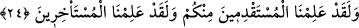
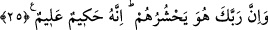

Allah gelince (tecellî eyleyince), arayan yok olur.
O vuslat ebedîlik içinde ebedîliktir (baka ender baka) ama
O ebedîlik (baka) yokluk (fenâ) sûretinde tecellî eder.
Nur/ışık arayan gölgeler,
Nur/ışık zûhûr edince yok olurlar.
Âşık başını verince, hiç akıl kalır mı?
“O’nun zâtından başka her şey yok olacaktır.” (el-Kasas, 28/88)
Hakk’ın zâtı huzûrunda, var da yok olur, yok da.
Yokluk da varlık. Zâten şaşılacak şey de bu ya!
24. Andolsun Biz, sizden öne gelip geçenleri de biliriz, geri kalanları da biliriz.
“Andolsun Biz, sizden önce gelip geçenleri” yâni, doğum ve ölümleri itibâriyle
sizden önce gelmiş olanları, yâni Âdem (a.s.) zamanından şu vakte kadarkileri “de
biliriz, geri kalanları da” doğum ve ölümleri itibâriyle sizden sonraya kalan yâni
kıyâmet gününe kadarkileri de “biliriz.” Ya da İslâm’a giriş ve cihad ediş konusunda
önceliği olanları, tâatte öne geçenleri de biliriz, bütün bu hususlarda geri kalanları da
biliriz. Sizin hâllerinizden hiçbir şey Bize gizli kalmaz.
25. Şüphesiz Rabbin onları (kıyâmette) toplayacaktır. Çünkü O hakîmdir, alîmdir.
“Şüphesiz” başkası değil “Rabbin onları” kıyâmet günü yaptıklarının karşılığını
vermek üzere öncekileri de sonrakileri de “toplayacaktır.” Zâten buna da sâdece O’nun
gücü yeter, böyle bir işin üstesinden sâdece O gelir. Bu ifâde, öldükten sonra dirilmeyi
inkâr edenleri reddetmektedir.
“Çünkü O hakîmdir,” sonsuz hikmet sâhibi, bütün yaptıklarını son derece sağlam
yapan biridir. Hikmet, bütün varlıkların hakîkatlarını oldukları şekliyle bilmek, fiillerini
gerektiği gibi sağlam ve güzel yapmak demektir. Hikmet, yaratılmışların değil Allah
Teâlâ’nın sıfatlarındandır. Filozofların ‘hikmet’ dedikleri şey ise akılla idrâk edilebilir
olan şeylerdir (ma’kulat). Onlar ise aklın ürünüdürler. Akıl ise yaratılmışların
sıfatlarındandır. Nasıl Allah Teâlâ’ya akıllı (âkil) denilmesi caiz değilse Allah’ın
hikmet verdikleri için mecazen ‘hakîm’ denilmesi dışında hiçbir mahlûka ‘hakîm’
denilmesi câiz değildir. et-Te’vîlâtü’n-Necmiyye’de böyle denilmektedir.
“Alîmdir.” O’nun ilmi her şeyi içine alır. Hikmet sıfatının önce zikredilmesi, herhalde
haşr ve cezâyı gerektirenin hikmet sıfatı olduğunu bildirmek içindir.